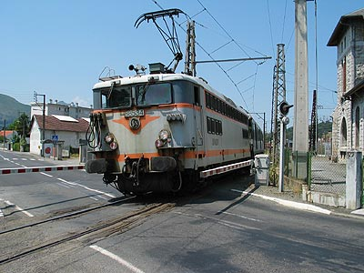
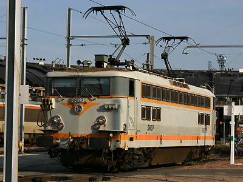
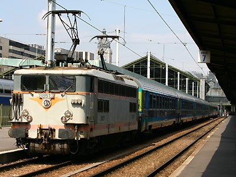

Ferrovia - 03 Juin 2012 - Mise à jour 25 Janvier 2015
BB 88500
Les BB 88500 sont des BB 8500 à petites cabines déclassées en 1997 à la remonte de rames vides entre dépôts et gares terminus en raison de l'inconfort de leurs cabines et de leur suspension. Cette transformation fait suite à la modification de BB 8100 en BB 80000. Ce programme prévu initialement à 27 machines fut raccourci à 12 BB 80000 complété des 15 premières BB 88500. Ces machines ont remplacé des BB 4730 et BB 300 qui avaient, elles-mêmes, été déclassées à la remonte plusieurs années auparavant.
Elles sont majoritairement issues de la première sous-série de BB 8500 à châssis court puisque sur 36 machines que celle-ci comptait, 30 furent déclassées. Auxquelles s'ajoutait la 8574, 31e et dernière machine renumérotée.
Huit machines en service à Chambéry furent à nouveau renumérotées BB 8700 en 2001 suite à l'agrandissement d'une de leurs cabines et leur spécialisation en UM de pousse dans la Maurienne.
Les BB 88500 étaient visibles notamment à Paris-Gare de Lyon, Lyon Part-Dieu, Toulouse ou Lourdes. plusieurs engins ont été radiés suite au déclassement d'autres BB 8500 ou 25500 à grandes cabines. Le parc s'est depuis concentré à Villeneuve St Georges et a assuré les remontes pour Paris-Gare de Lyon ainsi que la gare d'Austerlitz où elles ont relevé les BB 80000. L'ensemble de la série est amortie depuis 2014.
Quelques données techniques
Constructeur : Alstom
Tension d'alimentation : continu 1,5 kV
Chaîne de traction : Banc rhéostatique
Motorisation : 1 moteur par bogie, double rapport d'engrenage, transmission par anneau dansant.
Puissance totale : 2940 kW
Aptitude à l'UM et à la réversibilité
Longueur : 14,70m ou 14,94m
Masse : 78,3t ou 79,5t
Pantographes : 2 AM18B
Pour plus d'info :
La fiche BB 88500 sur Wikipedia
Fiche technique des Danseuses de Florent Brisou
L'inventaire des BB 88500 sur Trains du Sud-Ouest

La BB 88534 manoeuvre une rame à Lourdes (13/07/2003)

La BB 88527 à Villeneuve St Georges (04/09/2005)

La BB 88517 prête à assurer un Téoz...jusque Villeneuve (20/08/2005)